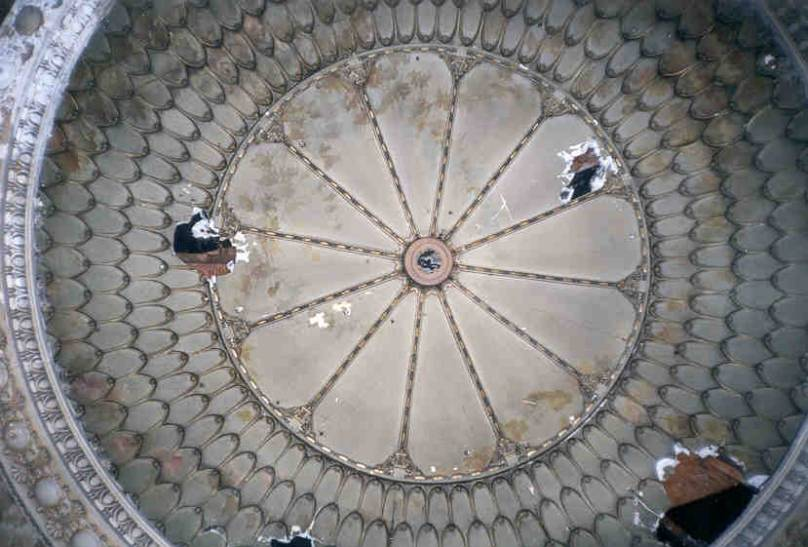
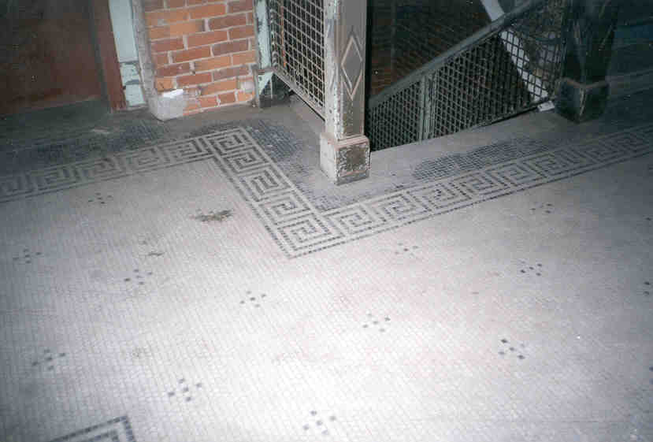

| We found this nice ceiling on the very top floor. It was in really poor shape but looked to be very nice at one time. We're guessing that this was once a ballroom or conference room for the hotel. It may have been covered up by a drop ceiling at one time, or maybe this room wasn't used, but it survived somehow. |
|
 |
This view from farther back shows more
of the ceiling and how it fit with the pillars that support it. You can
see that it appears to have been painted white up to a certain point. I
take this as further evidence for my brilliant drop ceiling theory! In the center of the picture you can see the large round nice looking recession that is pictured below. |
| The holes you see are one last piece of evidence suggesting a drop ceiling. That is where the wires most likely went through to support it. It's a shame that they just cover stuff like that up. Keep in mind that the pictures here were taken with caution to avoid drawing attention from the flash. |  |
|  |
| Here are a few more floor pictures. The one on the left is the tiling on each landing of the staircase. To the right is the floor previous to the one with the ceiling. Here you can see how the walls for either the offices, or the hotel rooms were set up. |
{kind=link}
{kind=link}
{kind=link}
{kind=link}
{kind=link}
{kind=link}